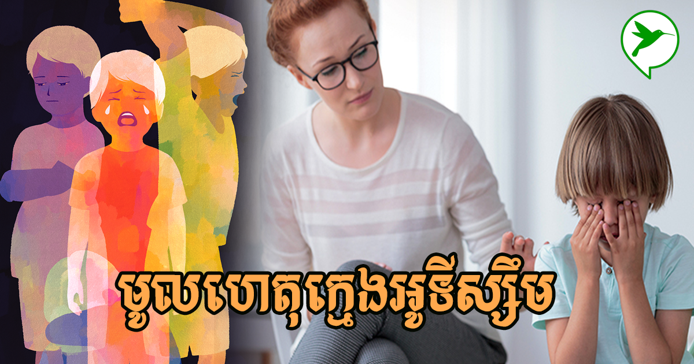
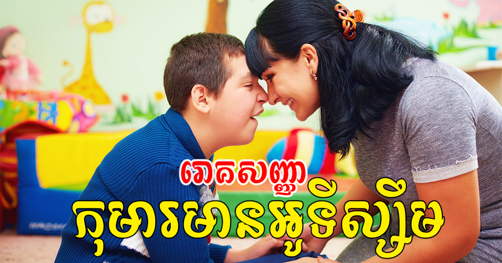
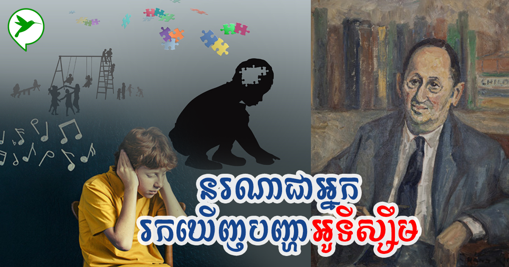
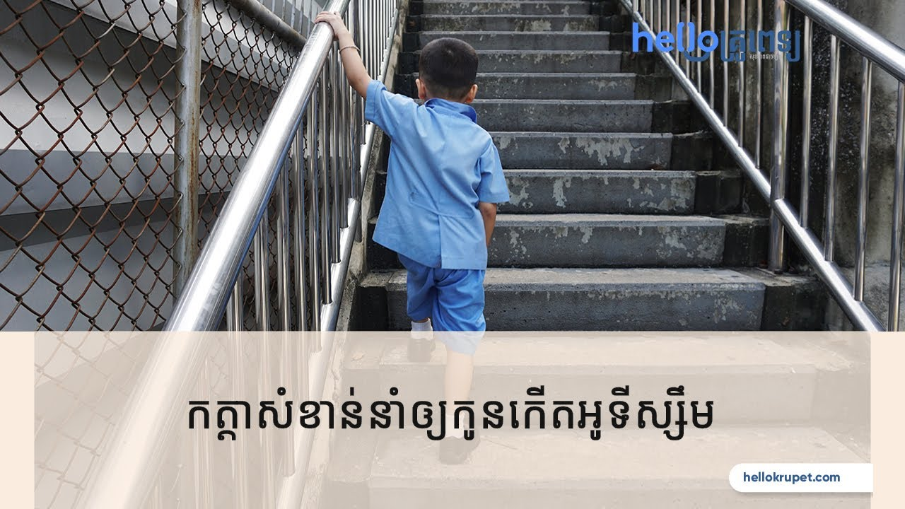
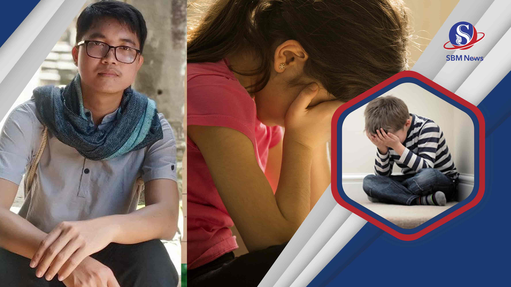
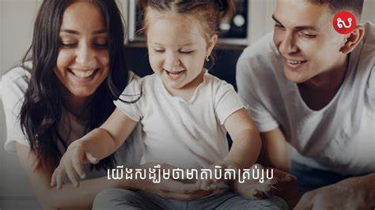

ហេតុអ្វីបានជាកុមារមានបញ្ហា អូទីស្សឹម ?
សំណួរនេះជាចំណោទមួយដែលម្តាយឪពុកជាច្រើននាពេលបច្ចុប្បន្ន
តែងបារម្ភជារឿយៗពីការវិវត្តន៍ប្រាជ្ញានិងស្មារតីកូនរបស់ខ្លួនជានិច្ច។
ទន្ទឹមគ្នានេះ ក៏បារម្ភដែរថា តើកូនរបស់ខ្លួនអាចមានបញ្ហានេះដែរទេ?
បើមានតើអនាគតកូននឹងទៅជាយ៉ាងណា?
ចម្លើយខ្លីនៃសំណួរនេះ
គឺឪពុកម្តាយវ័យក្មេងចាំបាច់ត្រូវឈ្វេងយល់បញ្ហានេះឱ្យបានស៊ីជម្រៅពីអូទីស្សឹម។

这ញ្ហាអូទីស្សឹម នៅតែអាថ៌កំបាំងរហូតមកដល់សព្វថ្ងៃ។
តាមការសិក្សារបស់បណ្តាញអូទីស្សឹមកម្ពុជា បានឱ្យដឹងថា
កុមារមានបញ្ហាអូទីស្សឹមនៅប្រទេសកម្ពុជានាពេលបច្ចុប្បន្ន មានចំនួនប្រមាណ ៣ម៉ឺននាក់
(ប៉ានប្រមាណ) ហើយកុមារទាំងនោះ ត្រូវការការអប់រំឥរិយាបថ និងអប់រំបំណិនជីវិត។
<អូទីស្សឹមកំពុងកើតច្រើនលើកុមារជុំវិញពិភពលោក ខណៈនៅស្រុកខ្មែរយើង
កុមារកើតអូទីស្សឹមក៏មានចំនួនគួរឱ្យកត់សម្គាល់ដែរ។ យោងតាមរបាយការណ៍អង្គការសុខភាពពិភពលោក (WHO)
បានឱ្យដឹងថា ក្នុងចំណោមក្មេង១០០នាក់ មានក្មេងម្នាក់កើតអូទីស្សឹម។ តើអូទីស្សឹមជាអ្វី?

សញ្ញាសង្ស័យបីនេះ អាចបង្ហាញថាកុមារមានបញ្ហា អូទីស្សឹម
គឺទី១ របៀបទំនាក់ទំនងសង្គមរបស់កុមារ គឺកុមាររស់នៅមិនសូវមានទំនាក់ទនង
ហាក់ដូចជាឃ្លាតឆ្ងាយពីម្តាយឪពុក មិនចូលចិត្តមើលមុខម្តាយឪពុកចំ
និងមិនខ្វល់ខ្វាយពីអ្វីដែលនៅជុំវិញខ្លួន។

ទី២ កុមារខ្សត់ភាសា ចូលចិត្តស្ងៀមស្ងាត់មិនសូវនិយាយស្តី (ក្នុងចំណោមកុមារមានបញ្ហាអូទីស្សឹម
១០០នាក់ មាន២៥%
គឺមិននិយាយស្តី ឬខ្លះទៀយពេលនិយាយមិនមានគោលដៅច្បាស់លាស់
ប្រយោគដាច់ៗ មិនអាចយល់បាន ឬកុមារខ្លះនិយាយដដែលៗ)។
ទី៣ អាកប្បកិរិយាកុមារ មានចរឹកឆេវឆាវ ឆាប់ខឹងឆាប់បាត់
ពេលខ្លះមិនមានប្រតិកម្មនឹងកម្តៅ (មិនដឹងក្តៅ មិនដឹងត្រជាក់)
កុមារមិនដឹងពីរសអាហារ ដើរចង្អើតជើង លេងអ្វីដដែលៗ
និងសីតុណ្ហភាពក្នុងខ្លួនប្រែប្រួលលឿនរហ័ស។
ប៉ុន្តែលក្ខណៈដែលអាចសម្គាល់បានថា កុមារមានបញ្ហាអូទីស្សឹមពិតប្រាកដ
គឺត្រូវឆ្លងកាត់អ្នកជំនាញវាយតម្លៃស្ថានភាពកុមារជាក់ស្តែង។

គួរកត់សម្គាល់ថា ការកំណត់ថា កុមារមានបញ្ហាអូទីស្សឹម (Autism)
ត្រូវបានកំណត់និងរកឃើញដំបូងបង្អស់ក្នុងពិភពលោក នៅឆ្នាំក្នុង
១៩៤៣ ដោយលោក Leo Kanner អ្នកចិត្តសាស្ត្រកុមារ នៅសាកលវិទ្យាល័យ
Johns Hopkins University School សហរដ្ឋអាម៉េរិក។
ប៉ុន្តែរហូតមកដល់ឆ្នាំ២០២០ នេះ មូលហេតុបង្កឱ្យកុមារមានបញ្ហាអូទីស្សឹម
មិនទាន់មានអ្នកវិទ្យាសាស្ត្ររកឃើញច្បាស់លាស់នោះទេ។
នាយកប្រតិបត្តិអង្គការជំនួយនៃក្តីសង្ឃឹមសម្រាប់សហគមន៍បានបន្តនិយាយថា
តាមការស្រាវជ្រាវក្នុងពិភពលោក ឆ្នាំ២០០៣ ក្នុងចំណោមកុមារ ១ពាន់នាក់
មានកុមារបីទៅបួននាក់ប៉ុណ្ណោះដែលមានបញ្ហាអូទីស្សឹម។ ប៉ុន្តែនៅពេលបច្ចុប្បន្ននេះ
ក្នុងចំណោមកុមារ ១ពាន់នាក់ មានបញ្ហាអូទីស្សឹមពី ១០ ទៅ ១៥ នាក់ដែលចំនួននេះកើនឡើងគួរឲ្យកត់សម្គាល់។ ទន្ទឹមគ្នានេះ
អ្នកវិទ្យាសាស្ត្រកំពុងតែឆ្ងល់ថា តើហេតុអ្វីបានជាបញ្ហាកុមារអូទីស្សឹម មានការកើនឡើងយ៉ាងដូច្នេះ។

ខណៈមិនទាន់មានហេតុផលបញ្ជាក់ថា កុមារអូទីស្សឹម មានបញ្ហាបណ្ដាលមកពីអ្វីឲ្យបានច្បាស់លាស់ក៏ប៉ុន្តែអ្នកវិទ្យាសាស្ត្រ
បានសន្និដ្ឋានថា មូលហេតុបណ្តាលឱ្យកុមារមានបញ្ហាអូទីស្សឹម
ប្រហែល ១៥ភាគរយបណ្ដាលមកពីកត្តាហ្សែនម្តាយឪពុក (តំណពូជ)
និងមួយផ្នែកទៀតបណ្ដាលមកពីកត្តាបរិស្ថាននៅជុំវិញខ្លួនរស់នៅរបស់កុមារ ដូចជាទម្លាប់ទុកកូនចោល
ឬឱ្យកូនលេងតែឯង និងបណ្តោយឱ្យកុមារប្រើប្រាស់ឧបរណ៍ស្មានហ្វូនជ្រុលហួសជាដើម។

北京健康管理中心的柬埔寨医生是柬埔寨为数不多的儿童自闭症专家。
有着非常丰富的临床经验和治疗经验。
经北京健康管理中心的专家医生治疗的柬埔寨儿童自闭症患者，现在很多都可以像正常儿童一样，学习，生活。
北京健康管理中心有最先进的设备和治疗条件。
欢迎来北京健康管理中心实地考察和体验。
除了药物治疗和物理治疗，每天服用北京健康管理中心研发的多成分植物营养茶对儿童自闭症的恢复也有很大的帮助。自闭症的一个最主要的原因是胎源性疾病， 由于在怀孕期间阴阳平衡不好，导致母亲气血不足，供给胎儿大脑神经发育的营养欠缺。所以引起后天的自闭症的发生。
在微信搜索小程序：“BHMC” 或扫描下方二维码，进入后可以看到详细的介绍。